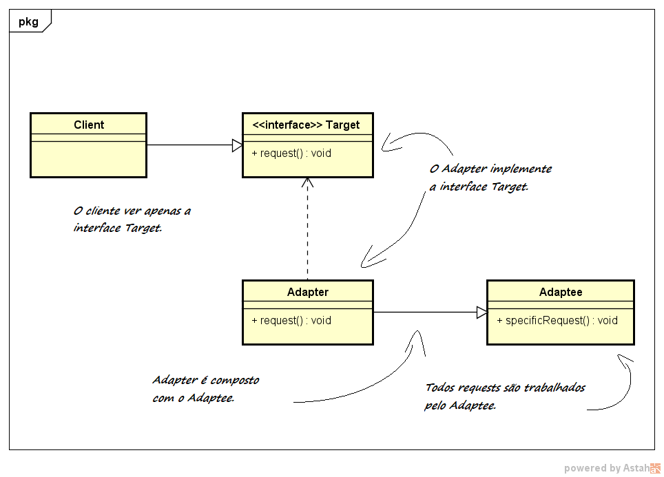

6 - Adapter
Descrição do padrão:
Design Patterns Estruturais nos fornecem diferentes modos de criar uma estrutura de classes, por exemplo, usando herança e composição para criar objetos mais complexos e maiores a partir de outros mais simples e menores. Adapter é um Design Pattern do tipo Estrutural. Sua função é adaptar a interface de uma classe para que esta trabalhe em conjunto com outra. Adapter trabalha como uma ponte entre duas interfaces incopatíveis. Ele é útil em situações que se tem dois objetos que não se encaixam e o trabalho conjunto deles é necessário para o projeto. Isso ocorre, por exemplo, quando se quer modificar partes do código de uma API. Um exemplo prático da vida real são os carregadores de celular. Eles adaptam a voltagem da tomada (120V) para a voltagem da bateria do celular (3V). Elementos do código: Target define as particularidades da interface que o cliente usa; Client trabalha com objetos conforme a interface Target; Adaptee define uma interface existente que precisa ser adaptada; Adapter adapta a interface de Adaptee para a interface Target. O padrão Adapter deve ser usado quando: Há uma interface de classe que não combina com outra que você precisa; Você quer criar classes reutilizáveis que coopere que uma classe qualquer; Existem muitas interfaces de subclasses e é inviável adapter uma a uma, então ultiliza-se Adapter por herança.
UML do padrão:

Descrição do exemplo do livro:
O autor do usa a diferença entre patos e perus com intuito criar um cenário simples e de fácil entendimento para a aplicação dos conceitos do padrão de projeto Adapter. Primeiro, o autor cria a interface Duck correspondente a um pato. Em seguida, ele nos dá a implementação de um pato da espécie Mallard. Por conseguinte, o autor cria a interface Turkey correspondente a um peru. Daí, há a implementação de um peru do tipo Wild. Após a criação do contexto, ele nos indaga sobre o seguinte: "E se quisermos usar um peru no lugar de um pato?". Como resposta, ele cria o Adapter chamado TurkeyAdapter, que recebe um peru como parâmetro e o adapta para se comportar como um pato. Há ainda uso de um método auxiliar que recebe patos como parâ- metro e verifica seu comportamento. Por fim, o autor cria a classe principal (main) para testar o Adapter, passando tanto um pato como um peru para o método auxilar e, como desejado, o método funciona para ambos objetos.